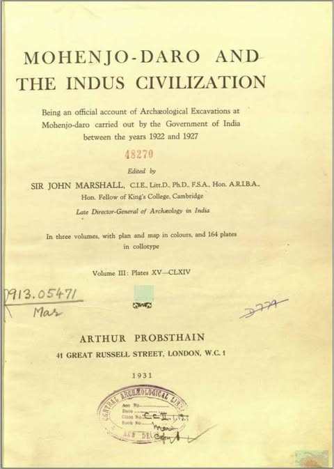
Mohenjo-Daro And The Indus Civilization
یہ مشہور و معروف کتاب 1931 میں لندن سے شائع ہوئی تھی، جسے آرتھر پروبستھین نے چھاپا اور اس کی ادارت محکمہ آثار قدیمہ ہند کے سابق ڈائریکٹر جنرل سر جان مارشل نے کی ہے۔ یہ کتاب تین جلدوں پر مشتمل ہے اور اس میں 1922 سے 1927 کے درمیان موہنجوداڑو میں کی جانے والی سرکاری کھدائیوں کی مکمل تفصیل درج ہے۔
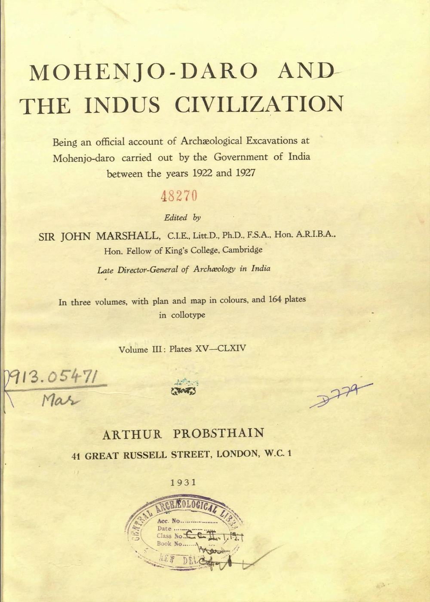
1
MOHENJO-DARO AND THE INDUS CIVILIZATION
موہن جو دڑو اور وادیٔ سندھ کی تہذیب
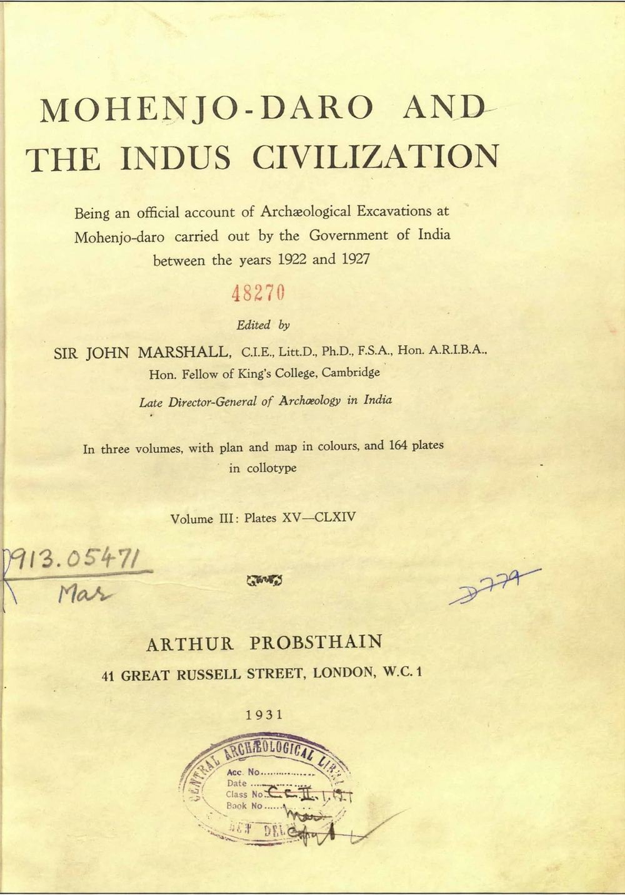
2
SD. Area: Stupa Mound. a) The Buddhist Stupa seen from north-west after excavation. b) Eastern side of courtyard showing remains of Kushan pavement before exploration of Indus remains beneath.
کھدائی کے بعد بدھ اسٹوپا کا شمال مغرب سے منظر، اور صحن کے مشرقی حصے میں کشان دور کا فرش
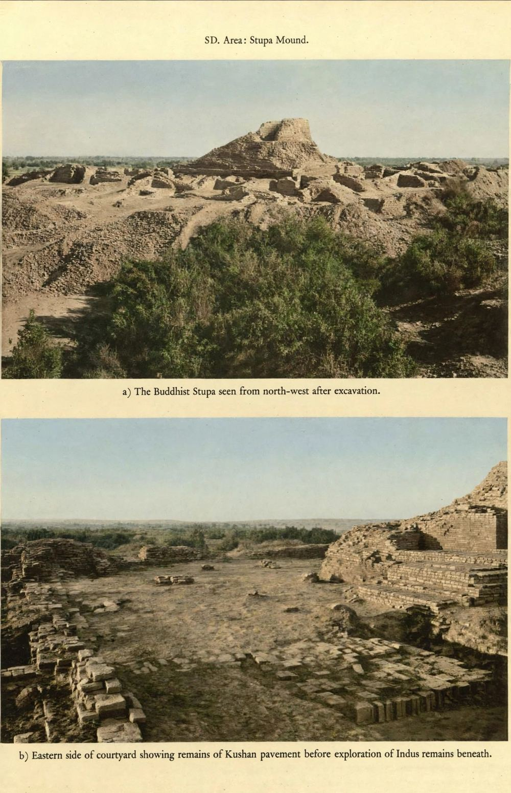
3
MOHENJO-DARO SD. AREA PLAN & SECTIONS OF THE STUPA & MONASTERY
موہن جو دڑو: اسٹوپا اور خانقاہ کا نقشہ اور تراشے
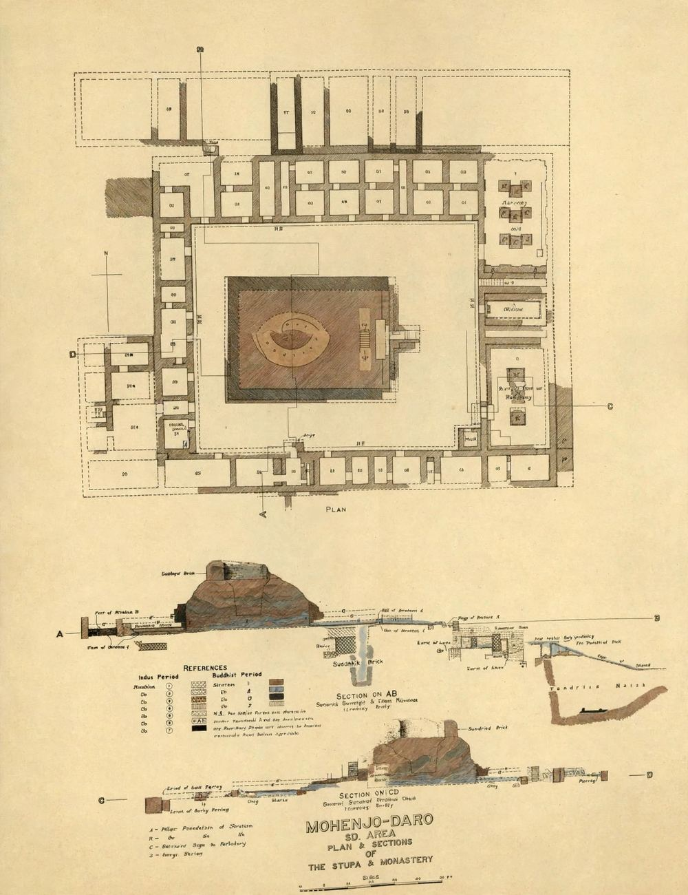
4
SD, Area: Stupa Mound. a) Image-niche and stairway to left ascending to platform of Stupa. b) Interior of Chamber 22 in Buddhist monastery. c) Late grave on ruined wall of Chamber 17 in Buddhist monastery. d) Chamber 14 in monastery, showing wall of Indus period below Buddhist foundations.
اسٹوپا کے چبوترے کی سیڑھی اور طاق، خانقاہ کے کمرے اور ان کے نیچے سندھ دور کی دیوار
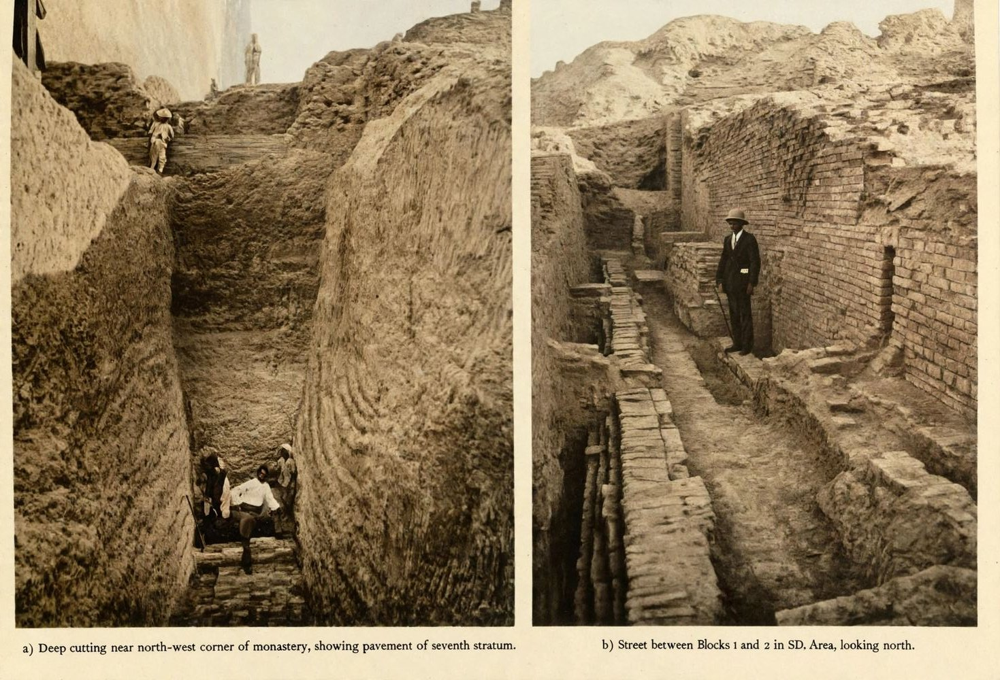
5
a) Deep cutting near north-west corner of monastery, showing pavement of seventh stratum. b) Street between Blocks 1 and 2 in SD. Area, looking north.
خانقاہ کے شمال مغربی کونے کے قریب گہری کھدائی اور بلاک 1 و 2 کے درمیان گلی
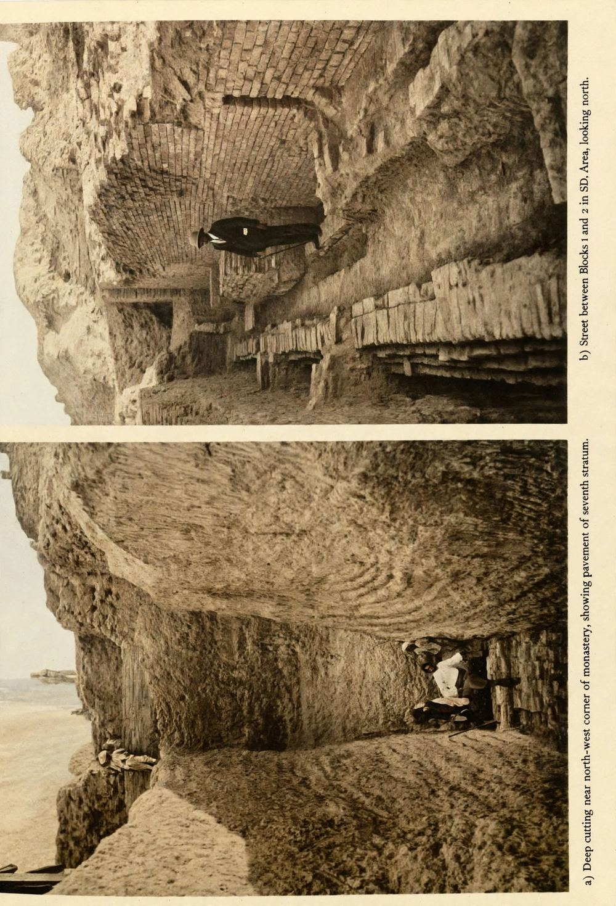
6
SD. Area: Stupa Mound. a) Excavation on eastern side of Stupa, showing constructions of Indus period, from the south-west. b) Northern end of cutting on east side of Stupa, showing Indus structures from north.
اسٹوپا کے مشرق میں کھدائی، سندھ دور کی تعمیرات کے مناظر

7
SD. Area. a) Eastern retaining wall of Great Platform, with drains near its foot. b) The Great Bath from north, showing rooms and fenestrated wall around.
عظیم چبوترے کی مشرقی دیوار اور اس کے دامن میں نالیاں؛ شمال سے عظیم غسل خانہ
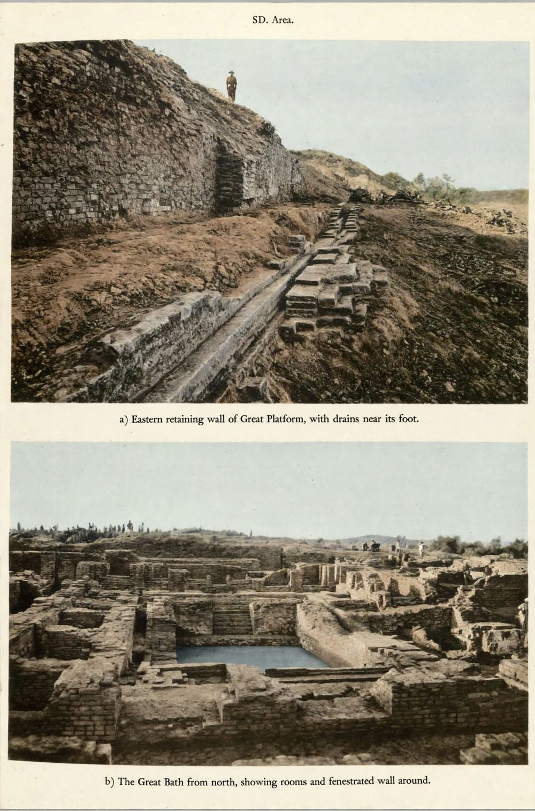
8
S.D. Area: The Great Bath. a) Water chamber (16) on western side of Bath, showing inspection shaft from east. b) Drain (37) with corbelled roof from northern end. c) Eastern end of water chamber (36). d) Western end of Street between Blocks 1 and 3, looking east.
عظیم غسل خانے کے پانی کے کمرے، چھت والی نالی اور بلاک 1 و 3 کے درمیان گلی
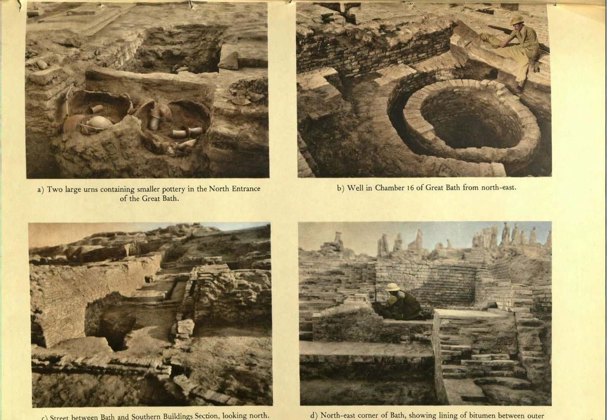
9
a) Two large urns containing smaller pottery in the North Entrance of the Great Bath. b) Well in Chamber 16 of Great Bath from north-east. c) Street between Bath and Southern Buildings Section, looking north. d) North-east corner of Bath, showing lining of bitumen between outer and inner walls.
غسل خانے کے شمالی دروازے میں بڑے مٹکے، کمرہ 16 کا کنواں اور غسل خانے کا شمال مشرقی کونا

10
a) Corner of Southern steps of Bath, showing recesses for ends of wooden treads. b) South-east corner of Chamber 4 in Block 3, showing chases in walls. c) Block 3, from the north-west. d) Block 3, from the south-east with Great Bath beyond right of picture.
غسل خانے کی جنوبی سیڑھیوں کا کونا اور بلاک 3 کے مختلف مناظر
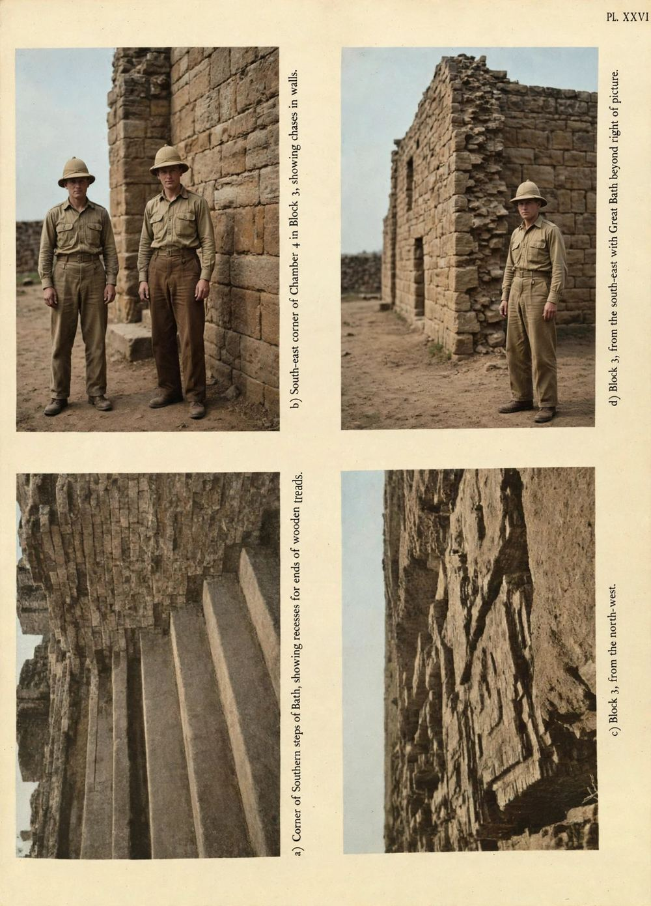
11
a) Oval-shaped well in Block 6 of Southern Buildings Section, from south. b) Ablution chamber in Block 1 of the Southern Buildings Section, from the east. c) Southern Buildings Section with Stupa in distance, from south. d) Chambers 8, 10 and 11 of the Great Bath during excavations, from east.
جنوبی عمارتوں میں بیضوی کنواں، غسل کا کمرہ اور عظیم غسل خانے کے کمرے
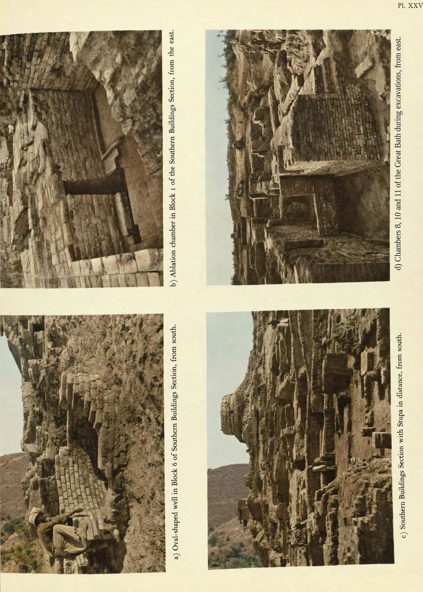
12
a) Section C. Columned Hall (portion 14), from the north-east. b) Section C, Columned Hall from north-east, with rough circle of bricks in foreground. c) Section C. Block 4. Portion 13 of Columned Hall in foreground, facing north-east. d) Section C. Block 5, from south, with Chambers 10 and 11 on left.
سیکشن C کے ستونوں والے ہال اور بلاک 4 و 5 کے مناظر
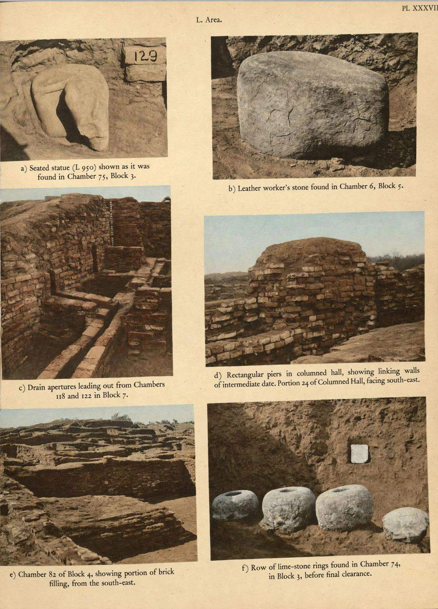
13
L. Area. a) Seated statue (L 950) shown as it was found in Chamber 75, Block 3. b) Leather worker's stone found in Chamber 6, Block 5. c) Drain apertures leading out from Chambers 118 and 122 in Block 7. d) Rectangular piers in columned hall, showing linking walls of intermediate date. Portion 24 of Columned Hall, facing south-east. e) Chamber 82 of Block 4, showing portion of brick filling, from the south-east. f) Row of lime-stone rings found in Chamber 74, in Block 3, before final clearance.
بیٹھا ہوا مجسمہ، چمڑے کے کاریگر کا پتھر، نالیوں کے سوراخ اور چونے کے پتھر کے چھلے

14
MOHENJO-DARO HR. AREA AND SECTIONS
موہن جو دڑو: HR ایریا کا نقشہ
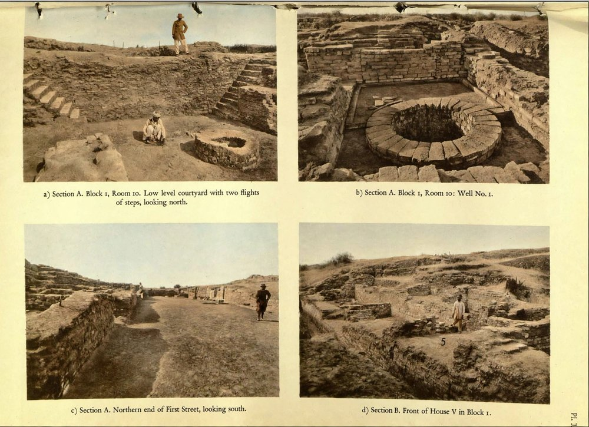
15
a) Section A. Block 1, Room 10: Low level courtyard with two flights of steps looking north. b) Section A. Block 4, Room 10: Well No. 1. c) Section A. Northern end of First Street, looking south. d) Section B. Front of House V in Block 1.
سیڑھیوں والا نچلا صحن، کنواں نمبر 1، پہلی گلی کا شمالی سرا اور مکان V کا سامنے والا حصہ
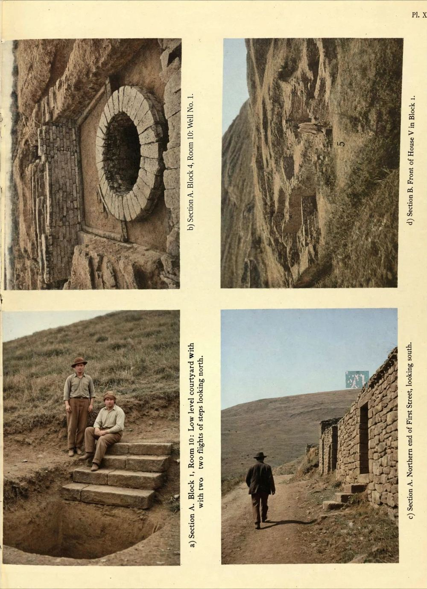
16
HR. Area, Section A. a) High Lane, looking west. b) Rubbish shoot and drain on south side of High Lane. c) Deadman Lane before excavation with remains of latest period on the surface. d) Deadman Lane showing brick drain and out-fall from Well No. 1 in Block 2, Room 10.
ہائی لین، اس کی نالی اور کوڑے کا سوراخ، اور ڈیڈمین لین کے مناظر
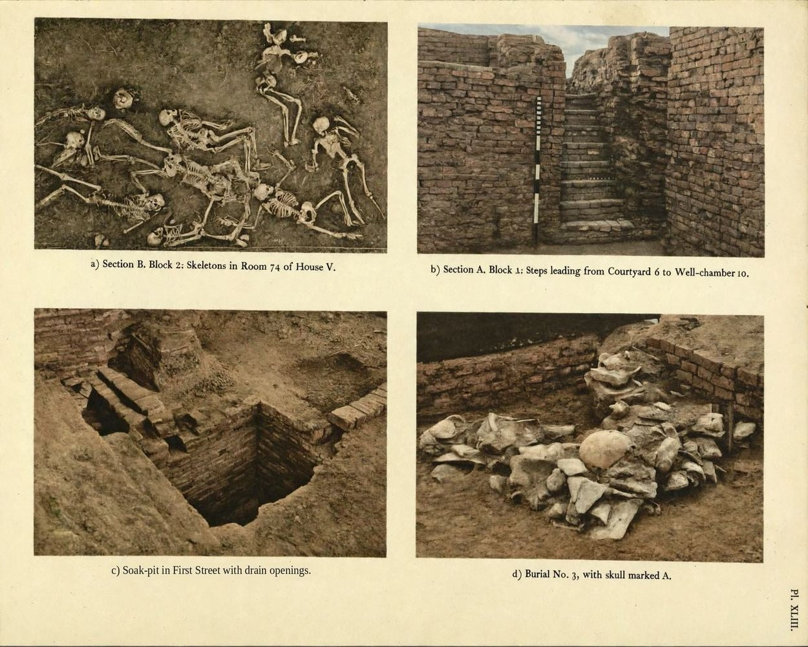
17
a) Section B. Block 2: Skeletons in Room 74 of House V. b) Section A. Block 1: Steps leading from Courtyard 6 to Well-chamber 10. c) Soak-pit in First Street with drain openings. d) Burial No. 3, with skull marked A.
مکان V کے کمرہ 74 میں ڈھانچے، کنویں کے کمرے کی سیڑھیاں اور تدفین نمبر 3
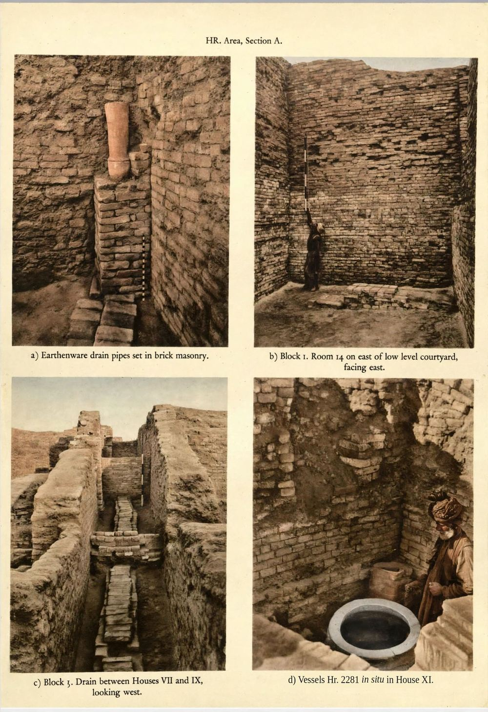
18
HR. Area, Section A. a) Earthenware drain pipes set in brick masonry. b) Block 1. Room 14 on east of low level courtyard, facing east. c) Block 3. Drain between Houses VII and IX, looking west. d) Vessels Hr. 2281 in situ in House XI.
اینٹوں میں لگے مٹی کے پائپ، نچلے صحن کا کمرہ اور مکان XI میں برتن

19
HR. Area, Section B. a) Group of skeletons in Room 74, House V. b) Portion of skeleton found above southern wall of same.
مکان V کے کمرہ 74 میں ڈھانچوں کا گروہ اور جنوبی دیوار کے اوپر ملا ڈھانچہ
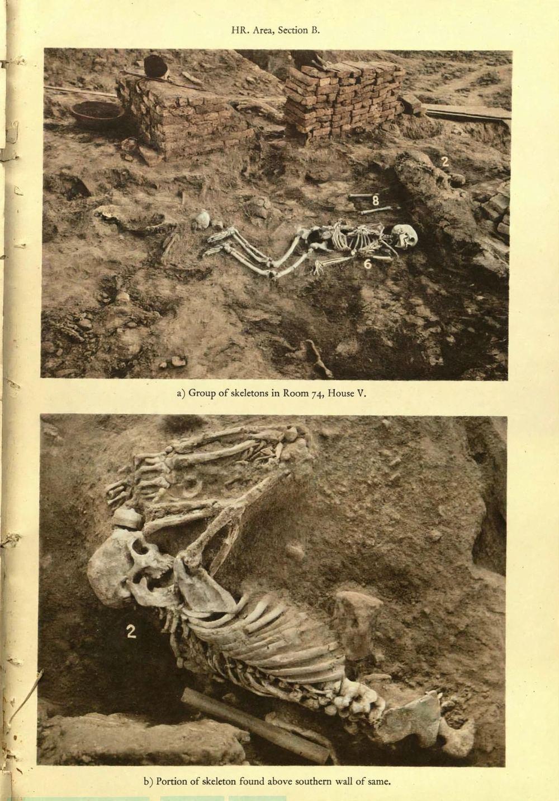
20
a) Block 3, House VII: Pottery Kiln in Court 17. b) Block 3, House XVI from east. c) Block 3, House X: Earthenware troughs sunk in floor of Room 134. d) Block 3, House XXIII, showing earlier stratum and part of street to east.
برتنوں کا بھٹا، مکان XVI، فرش میں دھنسے مٹی کے ناند اور قدیم تہہ
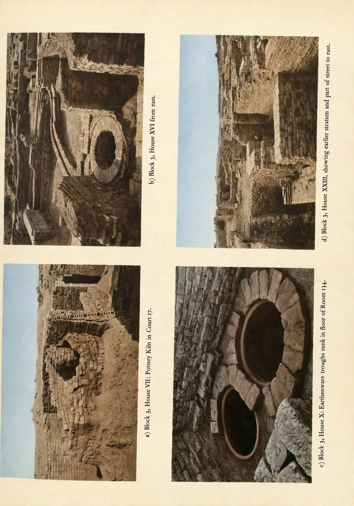
21
a) Block 5, Building XXX, showing deep foundations. b) Block 5, House XXX: Well-chamber in Room 57. c) Third Street, looking north. d) Block 9, House LXVI.
گہری بنیادیں، کنویں کا کمرہ، تیسری گلی اور مکان LXVI
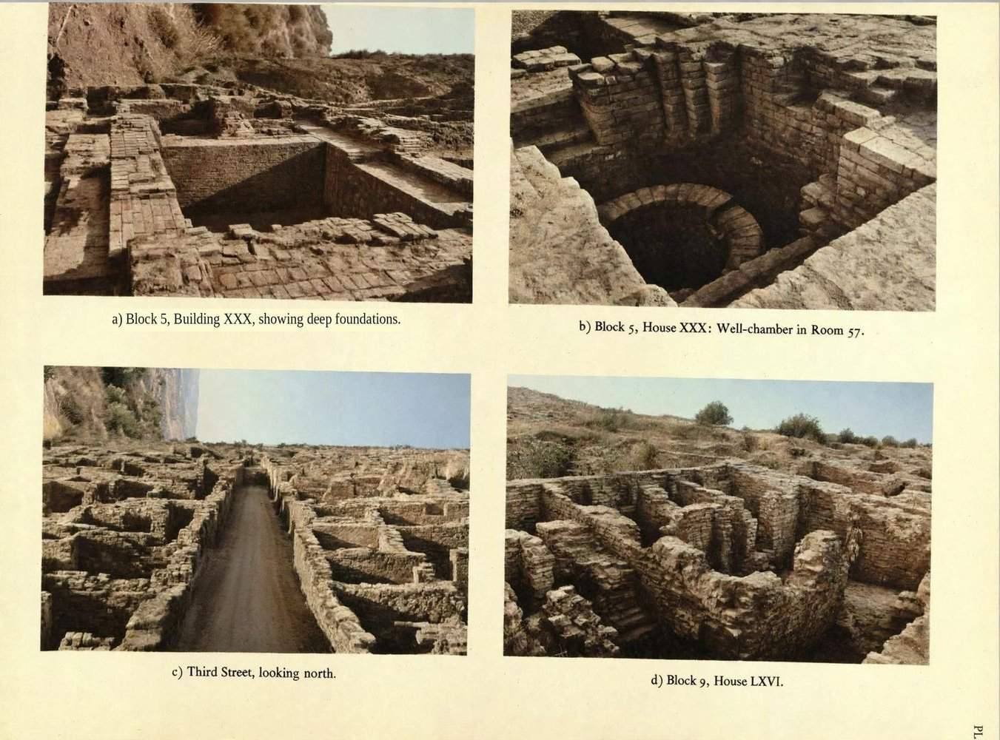
22
DK. Area, Section C, a) Block 6 in foreground, with Blocks 10, 11 and 12 beyond, looking south-east. b) General view of Blocks 8 and 10, from north-east.
سامنے بلاک 6 اور پیچھے بلاک 10، 11، 12؛ بلاک 8 اور 10 کا عمومی منظر
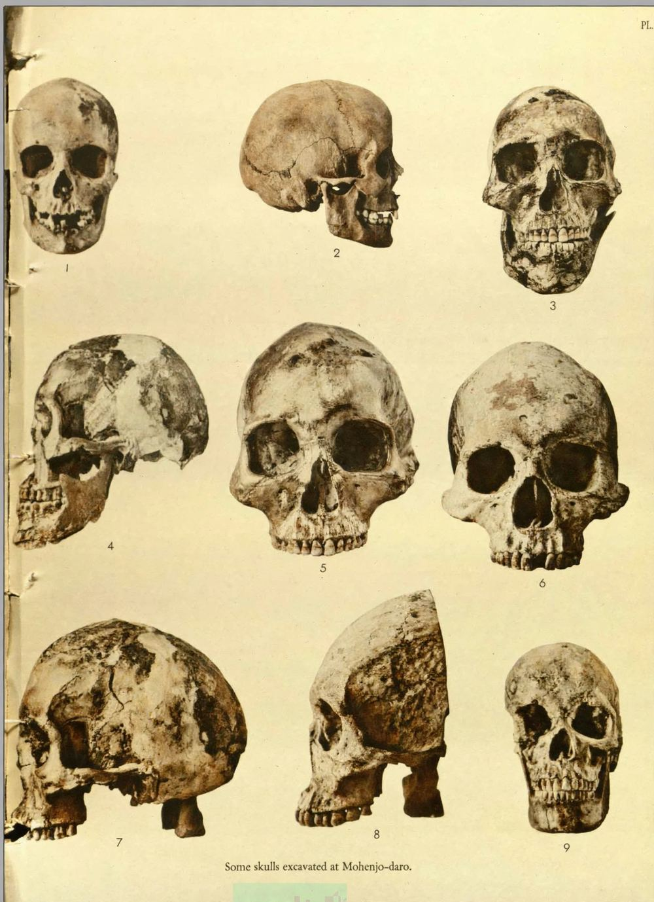
23
Some skulls excavated at Mohenjo-daro.
موہن جو دڑو سے کھدائی میں ملی کچھ کھوپڑیاں